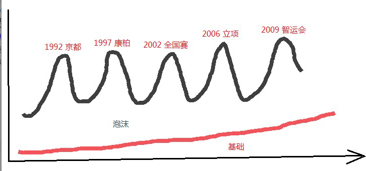

五子棋没落了吗？
#1 五子棋没落了吗？ 作者：秋叶散人 发表时间：2013-11-20 11:22:43
为什么07年的时候全国赛男子组还有70-80人参赛，而现在最多也就30-40人？#2 Re:五子棋没落了吗？ 作者：王小 发表时间：2013-11-20 15:07:12
沙发#3 Re:五子棋没落了吗？ 作者：继续沉醉 发表时间：2013-11-20 17:47:23
终结一出，renju必孤。#4 Re:五子棋没落了吗？ 作者：三国老凯 发表时间：2013-11-20 20:27:39
三年没下了哈哈#5 Re:五子棋没落了吗？ 作者：无尽 发表时间：2013-11-20 21:59:01
等小盘友接力了
貌似除了个别地区，一开始没真正扩展到学校，只是爱好者自己玩，后备力量不足，不像国跳一开始就进学校，毕竟当年那批人都老了
现在五子棋在中小学、高校发展虽然有快有慢，但至少还在前进，上海的势头似乎就比较好，广东这边不少高校自发也组织五子棋比赛，以前是没有的，当然还有其他地区
［此帖子已被 无尽 在 2013-11-20 22:05:32 编辑过］
#6 Re:五子棋没落了吗？ 作者：极地剑客 发表时间：2013-11-20 23:16:30
mm这个重要生产力严重不足，导致五子棋没落很正常。 这个真相我会到处乱说？
这个真相我会到处乱说？
#7 Re:无尽【==Re:五子棋没落了吗？==】 作者：秋叶散人 发表时间：2013-11-21 9:08:54
无尽说到点子上了！要避免五子棋越来越“小众化”，进军学校是关键。各级学生是基础中的基础。#8 Re:继续沉醉【==Re:五子棋没落了吗？==】 作者：秋叶散人 发表时间：2013-11-21 9:20:41
也是哈！终结者和黑石确实加快了五子棋的研究进程，但是也使得五子棋越来越小众化。#9 Re:五子棋没落了吗？ 作者：屏蔽 发表时间：2013-11-21 9:35:13
呵呵呵呵呵呵也就下五子棋的人才可能想不明白这种问题逻辑能力社会实践各方面简直令人捉急好久没开嘲讽了真是太爽了#10 Re:屏蔽【==Re:五子棋没落了吗？==】 作者：秋叶散人 发表时间：2013-11-21 9:52:20
您老倒是断个句啊！好嘛，一句读完差点儿没把我憋死！#11 Re:五子棋没落了吗？ 作者：屏蔽 发表时间：2013-11-21 10:03:29
治毛 没病治毛#12 Re:屏蔽【==Re:五子棋没落了吗？==】 作者：秋叶散人 发表时间：2013-11-21 11:30:06
没病？我只能说“何弃疗”了！#13 Re:五子棋没落了吗？ 作者：屏蔽 发表时间：2013-11-21 11:58:23
凭借浅薄而迟钝的感觉 以现象代替本质 呵呵呵呵呵呵#14 Re:屏蔽【==Re:五子棋没落了吗？==】 作者：秋叶散人 发表时间：2013-11-21 13:48:13
#15 Re:五子棋没落了吗？ 作者：屏蔽 发表时间：2013-11-21 13:54:23
从爱网看五子棋的世界 你是不是也可以从大妈广场舞预测一下冬奥会的花样滑冰成绩？
什么都不知道 说明你自己都不懂 等你知道了再说吧
#16 Re:五子棋没落了吗？ 作者：秋叶散人 发表时间：2013-11-21 14:36:31
好吧，我承认我什么都不知道，什么都不懂。［ 雅匪同学于 2013-11-22 16:30:58 时花20金币送鲜花一朵］
#17 Re:秋叶散人【==五子棋没落了吗？==】 作者：will 发表时间：2013-11-24 9:35:39
五子棋没有没落，因为五子棋根本就没繁荣过~
#18 Re:五子棋没落了吗？ 作者：屏蔽 发表时间：2013-11-24 10:08:27
17楼这个话在理#19 Re:五子棋没落了吗？ 作者：灯塔连珠 发表时间：2013-11-24 10:30:58
从娃娃抓起~~~我们一直在基层做普及工作，但是小孩的兴趣也是一时的，能一直坚持下来的， 毕竟是少数，只靠我们这些个别的五子棋老师还是力量太单薄了。
火车跑得快，全凭车头带，领导无能累死千军呀~~~上边还是不重视，只知道拿成绩，搞政绩，下边的五子棋老师也是只能维持温饱呀~~~好多教五子棋的老师也改行了，为什么生活不下去呀~~不能只凭一腔热血活着，现实很残酷。
#20 Re:五子棋没落了吗？ 作者：与郎共五 发表时间：2013-11-24 10:41:13
五子棋的潜力还没被发掘，目前是下坡要承认#21 Re:五子棋没落了吗？ 作者：釣鱼岛岛主 发表时间：2013-11-24 12:47:19
#22 Re:五子棋没落了吗？ 作者：水月 发表时间：2013-11-25 18:18:23
没落？#23 Re:五子棋没落了吗？ 作者：行云流水 发表时间：2013-11-25 21:36:09
如果问的是基础人口的概念，那只能说一句，普及工作是要持久的，要靠做出来的，不是耍嘴皮子的事。
如果问的是专业比赛的概念，那只能这么说，还没到职业赛的阶段，能有选手放弃休息，不远千里参赛，虽然三四十人，也很不容易了。